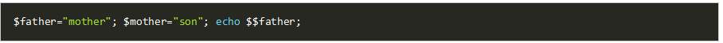
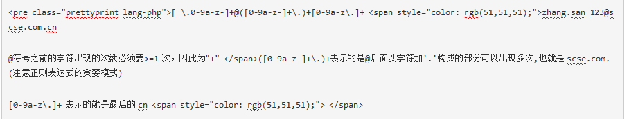
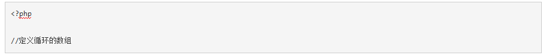
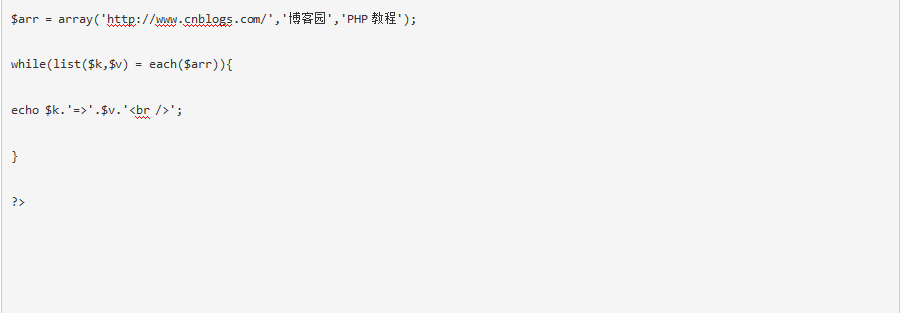

1.PHP执行的时候有如下执行过程：Scanning(Lexing) - Compilation - Execution - Parsing，其含义分别为：
A、将PHP代码转换为语言片段(Tokens)、将Tokens转换成简单而有意义的表达式、顺次执行Opcodes、将表达式编译成Opocdes
B、将PHP代码转换为语言片段(Tokens)、将表达式编译成Opocdes、顺次执行Opcodes、将Tokens转换成简单而有意义的表达式
C、将PHP代码转换为语言片段(Tokens)、将Tokens转换成简单而有意义的表达式、将表达式编译成Opocdes、顺次执行Opcodes
D、将PHP代码转换为语言片段(Tokens)、将表达式编译成Opocdes、将Tokens转换成简单而有意义的表达式、顺次执行Opcodes
参考答案：C
答案解析：
正确答案为C
1.Scanning(Lexing) ,将PHP代码转换为语言片段(Tokens)
2.Parsing, 将Tokens转换成简单而有意义的表达式
3.Compilation, 将表达式编译成Opocdes
4.Execution, 顺次执行Opcodes，每次一条，从而实现PHP脚本的功能。
2.不是php魔术常量的是？
A、__TRAIT__
B、__CALL__
C、__CLASS__
D、__FUNCTION__
参考答案：B
答案解析：
\_\_LINE\_\_ \_\_FILE\_\_ \_\_DIR\_\_ \_\_FUNCTION\_\_ \_\_CLASS\_\_ \_\_TRAIT\_\_ \_\_METHOD\_\_ \_\_NAMESPACE\_\_
3.php选项/信息函数作用错误的是？
A、phpinfo() 输出关于 PHP 配置的信息
B、php_sapi_name() 返回 web 服务器和 PHP 之间的接口类型
C、ini_set() 为一个配置选项设置值
D、ini_get() 获取所有配置选项
参考答案：D
答案解析：
ini\_get() 是获取一个配置选项，获取所有配置选项的函数是ini\_get\_all()
4.下列代码的输出是 ?

A、son
B、mother
C、motherson
D、error
参考答案：A
答案解析：
php里变量字符串之前加$等于指向另外一个字符串
5.下列对shell 变量FRUIT 操作，正确的是？
A、为变量赋值：$FRUIT=apple
B、显示变量的值：fruit=apple
C、显示变量的值：echo $FRUIT
D、判断变量是否有值：[ -f ―$FRUIT ]
参考答案：C
答案解析：
为变量赋值FRUIT=apple; 显示变量的值为C; 判断是否有值[-n $FRUIT];
6.以下不是线性表是？
A、数组
B、二叉树
C、队列
D、栈
参考答案：B
答案解析：
二叉树是树结构
7.以下哪个函数不是PHP的文件指针操作？
A、ftell()
B、fseek()
C、file()
D、feof()
参考答案：C
答案解析：
ftell() 返回文件指针位置 fseek() 在文件指针中定位 feof() 测试文件指针是否在结尾
8.关于线程的，说法错误的是?
A、线程是进程的一个实体,是CPU调度和分派的基本单位
B、它是比进程更小的能独立运行的基本单位
C、线程和进程一样拥有系统资源
D、线程自己基本上不拥有系统资源
参考答案：C
答案解析：
线程是指进程内的一个执行单元,也是进程内的可调度实体。线程自己基本上不拥有系统资源
9.GoAccess虽然很强大但是他不能做以下哪项工作？
A、生成统计数据带宽统计
B、可生成HTML报告
C、可发送HTTP请求
D、各HTTP状态码统计
参考答案：C
答案解析：
GoAccess：是一款开源、实时，运行在命令行终端下的web日志分析工具。该工具提供快速、 多样的HTTP状态统计，可以令管理员不再纠结于统计各类数据 GoAccess主要以统计为主
10.PHP的三个模块不包括哪个？
A、内核
B、zend引擎
C、扩展层
D、解析层
参考答案：D
答案解析：
PHP总共三个模块：内核、zend引擎、以及扩展层
很多人在刚接触这个行业的时候或者是在遇到瓶颈期的时候，总会遇到一些问题，比如学了一段时间感觉没有方向感，不知道该从那里入手去学习，对此我整理了一些资料，需要的可以免费分享给大家（11年架构师带你解读年薪50万面试通关秘籍。）
如果喜欢我的文章，想与一群资深开发者一起交流学习的话，获取更多相关大厂面试咨询和指导，欢迎加入我的学习交流群点击此处PHP高级交流
11.CSRF攻击描述错误的是？
A、CSRF需要有JavaScript代码
B、CSRF攻击恶意代码位于第三方站点上
C、过滤用户的输入可以防止恶意代码注入到某个站点，但是它无阻止法恶意代码在第三方站点上运行
D、CSRF符合同源策略
参考答案：A
答案解析：
XSS攻击需要JavaScript代码，CSRF攻击不需要JavaScript代码
12.关于PHP数组在C语言中是哪种存储结构？
A、单链表
B、双链表
C、循环链表
D、二叉树
参考答案：B
答案解析：
双链表
13.关于组合模式，说法错误的是？
A、它在我们树型结构的问题中，模糊了简单元素和复杂元素的概念，客户程序可以向处理简单元素一样来处理复杂元素，从而使得客户程序与复杂元素的内部结构解耦
B、定义了一种一对多的依赖关系，让多个观察者对象同时 监听某一个主题对象。这个主题对象在状态 发生变化时，会通知所有观察者对象，使他们能够自动更新自己
C、树枝和叶子实现统一接口，树枝内部组合该接口
D、将对象组合成树形结构以表示"部分-整体"的层次结构。组合模式使得用户对单个对象和组合对象的使用具有一致性
参考答案：B
答案解析：
将对象组合成树形结构以表示"部分-整体"的层次结构。组合模式使得用户对单个对象和组合对象的使用具有一致性 树枝和叶子实现统一接口，树枝内部组合该接口 它在我们树型结构的问题中，模糊了简单元素和复杂元素的概念，客户程序可以向处理简单元素一样来处理复杂元素，从而使得客户程序与复杂元素的内部结构解耦
14.数据结构的储存方式描述错误的是？
A、顺序存储用数据元素在存储器中的相对位置来表示数据元素之间的逻辑结构
B、链式存储在每一个数据元素中增加一个存放另一个元素地址的指针，用该指针来表示数据元素之间的逻辑结构
C、顺序结构数据元素存放的地址是连续的
D、数据算法的实现依赖于所采用的逻辑结构
参考答案：D
答案解析：
顺序存储结构：用数据元素在存储器中的相对位置来表示数据元素之间的逻辑结构(关系)。 链式存储结构：在每一个数据元素中增加一个存放另一个元素地址的指针(pointer )，用该指针来表示数据元素之间的逻辑结构(关系) 顺序结构：数据元素存放的地址是连续的； 链式结构：数据元素存放的地址是否连续没有要求。 数据的逻辑结构和物理结构是密不可分的两个方面，一个算法的设计取决于所选定的逻辑结构，而算法的实现依赖于所采用的存储结构
15.下面Http协议请求方式中不包括？
A、OPTIONS
B、HEAD
C、DELETE
D、SET
参考答案：D
答案解析：
没有SET
16.下边不是php的伪类型的是？
A、mixed
B、void
C、array|object
D、callable
E、以上都是
参考答案：E
答案解析：
答案是没有答案、php的伪类型包含 mixed： 说明返回可包含多种类型 number: 说明一个参数可以是 integer 或者 float callback或者callable: 说明可以是回调函数 array|object: 说明既可以是array也可以是object void: 说明返回值无意义、作为入参表示不接受任何参数 这里想说的是、我们要打破常规、有些a、b、c、d中并没有我们想要的、而不是每一个都必须有标准答案，重要的是我们学会一个知识点儿~、因为必须提交一个答案，所以~~~
17.文本文件和二进制文件的存取，错误的是？
A、用记事本打开二进制文件时, 出现乱码是很必然了
B、二进制文件还是文本文件, 在存储时都是一连串的0和1
C、打开方式是一样的
D、二进制文件最小单位则是位
参考答案：C
答案解析：
打开方式不同, 这些0和1的处理就不同
18.不是PHP加密函数的是？
A、openssl_encrypt
B、json_encode
C、mcrypt_encrypt
D、md5
参考答案：B
答案解析：
md5 sha1 mcrypt\_encrypt openssl\_encrypt
19.什么是PHP的多维数组
A、PHP的值是多种数据类型
B、PHP的值也是数组类型
C、PHP的索引有数字和字母
D、以上都是
参考答案：B
答案解析：
多维数组：数组中的值也是数组
20.下面哪一个正则表达式用来验证电子邮件（如： zhang.san_123@scse.com.cn ）的格式最正确（）
A、[_\.0-9a-z]@([0-9a-z]+\.)+[0-9a-z\.-]{2,6}
B、[_\.0~9a~z-]*@([0~9a~z-]+\.)+[0~9a~z\.]+
C、[_\.0-9a-z-]+@([0-9a-z-]+\.)+[0-9a-z\.]+
D、[_\.0~9a~z-]+@([0~9a~z-]+\.)+[0~9a~z]{2,6}
参考答案：C
答案解析：
C

21.（ ）是一种客户端脚本语言，它采用解释方式在计算机上执行。
A、Python
B、Java
C、PHP
D、JavaScript
参考答案：D
答案解析：
JavaScript一种直译式脚本语言，是一种动态类型、弱类型、基于原型的语言，内置支持类型。它的解释器被称为JavaScript引擎，为浏览器的一部分，广泛用于客户端的脚本语言，最早是在HTML（标准通用标记语言下的一个应用）网页上使用，用来给HTML网页增加动态功能。
22.以下关于结构型模式说法错误的是？
A、结构型模式可以在不破坏类封装性的基础上，实现新的功能
B、结构型模式主要用于创建一组对象
C、结构型模式可以创建一组类的统一访问接口
D、结构型模式可以在不破坏类封装性的基础上，使得类可以同不曾估计到的系统进行交互
参考答案：B
答案解析：
结构型（structural）：处理类或对象间的组合
23.用PHP打印出前一天的时间格式是2006-5-10 22:21:21(2分)****************
A、echo date('Y-m-d H:i:s', strtotime('-1 days'));
B、echo date('Y-m-d H:i:s', strtotime('-1 day'));
C、echo date('Y-m-d H:i:s', strttime('-1 days'));
D、echo date('Y-n-d H:i:s', strtotime('-1 days'));
参考答案：A
答案解析：
echo date('Y-m-d H:i:s', strtotime('-1 days'));
24.下面关于数组和数据结构的说法错误的是?
A、栈 是 后进先出的线性表，可以随意写入和读取数据
B、队列 是先进先出的线性表，只允许后端插入，前端进行删除操作
C、php中可以用 array_push 入栈,arrar_pop 实现出栈
D、php中用array_push入列，array_shift 出列
参考答案：A
答案解析：
栈 只能在一端进行写入和删除的操作。
25.以下关于引用说法错误的是？
A、引用不是C的指针
B、引用不允许用两个变量来指向同一个内容
C、用引用可以传递变量
D、可以将一个变量通过引用传递给函数，这样该函数就可以修改其参数的值。
参考答案：B
答案解析：
引用是允许用两个变量来指向同一个内容的
26.数组的遍历方式，下列错误的是？
A、foreach
B、each
C、for
D、list
参考答案：D
答案解析：
list只能把数组的元素变成变量，并不是遍历。
联合使用list()、each()和while循环遍历数组
each()函数需要传递一个数组作为一个参数，返回数组中当前元素的键/值对，并向后移动数组指针到下一个元素的位置。
list()函数，这不是一个真正的函数，是PHP的一个语言结构。list()用一步操作给一组变量进行赋值。


27.不能匹配数字的正则表达式是
A、^{0-9}*$
B、^\d{n}$
C、^\d{n,}$
D、^\d{m,n}$
参考答案：A
答案解析：
{}是元字符号，A缺少元字符
28.PHP运行模式哪个不适合做http服务？
A、cgi模式
B、fastcgi模式
C、isapi模式
D、cli模式
参考答案：D
答案解析：
cgi模式、fastcgi模式、isapi模式都可以提供http服务 cli模式不能提供http服务
29.在 Linux 中，文件（ ）用于解析主机域名。
A、etc/hosts
B、etc/host.conf
C、etc/hostname
D、 etc/bind
参考答案：A
答案解析：
etc/hosts 用于解析主机域名
1.假设当前屏幕分别率为1024×768，定义一个居中的占屏幕一半大小的表格的语句是
A、<TABLE ALIGN=”CENTER” WIDTH=”50%”></TABLE>
B、<TABLE ALIGN=”CENTER” WIDTH=”512″></TABLE>
C、<DIV ALIGN=”CENTER”><TABLE WIDTH=”512″></TABLE></DIV>
D、<CENTER><TABLE WIDTH=”50%”></TABLE></CENTER>
参考答案：A,B,C,D
答案解析：
center标签HTML5不推荐使用了...这种没有语义的纯样式标签是不符合w3c规范的，MDN上也有相关说明